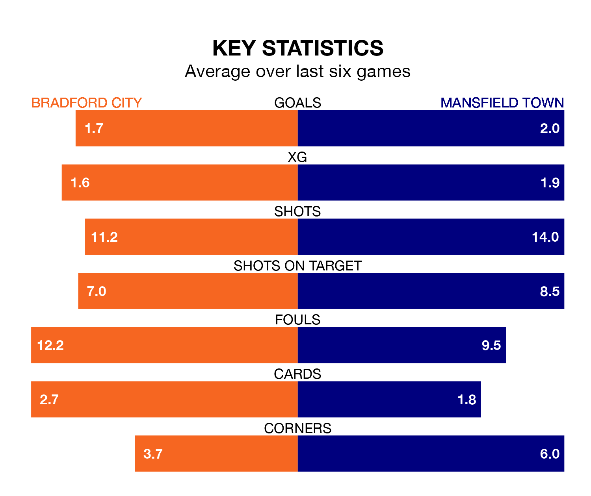

Mansfield Town travel to the University of Bradford Stadium for Saturday's match against Bradford City looking to bounce back from defeat last time out in EFL League Two.
The Stags, who sit top of the league after 37 games, fell to a 2-1 away defeat to Tranmere Rovers on Tuesday.
They face a Bradford side who also lost their last match, a 2-0 defeat to Forest Green Rovers, and who sit 13th in the table.
With 73 goals in 37 games so far this season, Mansfield are the league's highest scorers with 2.0 goals per game. And they are conceding fewer than average, letting in 35 goals at a rate of 0.9 per game.
Bradford, meanwhile, are below average scorers, with 1.2 goals per game, compared to a league average of 1.5. They have also conceded 1.2 goals per game.
In Christy Pym, Town can rely on one of the league's safest pair of hands. He has kept 13 clean sheets in his 37 appearances this season, and only one other 'keeper – AFC Wimbledon's Alex Bass – has been able to prevent the opposition scoring on more occasions in EFL League Two.
In City's net, Harry Lewis has eight clean sheets in 26 games. He has conceded a goal every 73 minutes, 40% more often than the 101 minutes between goals for Pym.
In the last 10 years, Bradford and Mansfield have played each other on nine occasions. Bradford won five of them, Mansfield two, and they drew twice.
On average, the Bantams scored 1.3 goals and the Stags 1.1 in those matches.
Their last meeting was on September 2, when they played out a 0-0 draw.
The Bantams are in good form in EFL League Two, with four wins and a draw from their last six games.
With three wins and three losses over that period, the Stags' form is worse – they have taken nine points from 18, compared to the home team's 13.
Saturday's match will be refereed by Martin Coy, who has taken charge of nine EFL League Two games so far this season, issuing one red card and booking 46 players. He has awarded three penalties.
He is yet to oversee a match featuring either Bradford or Mansfield this season.
Updated: 15:10 (UTC), 15/03/24